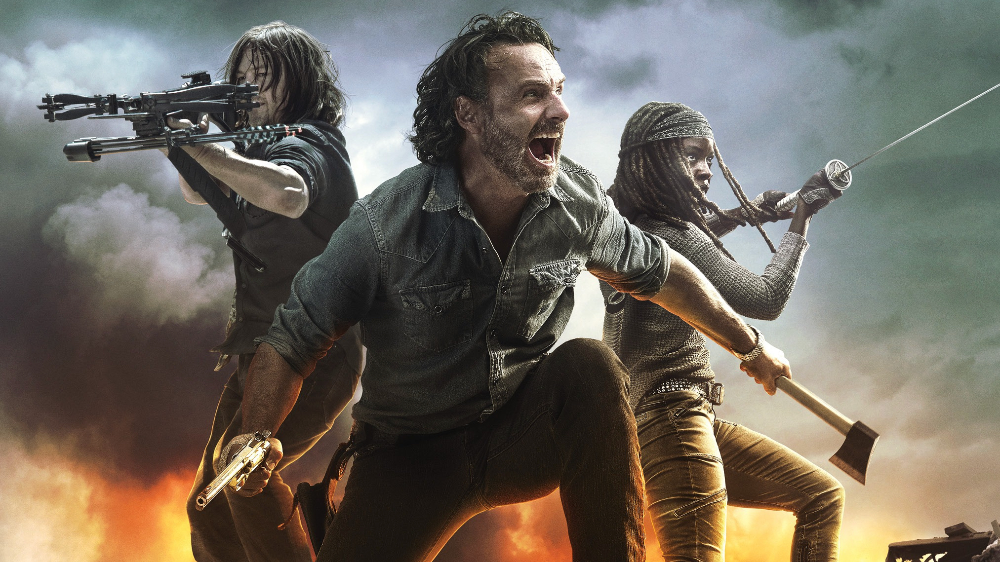
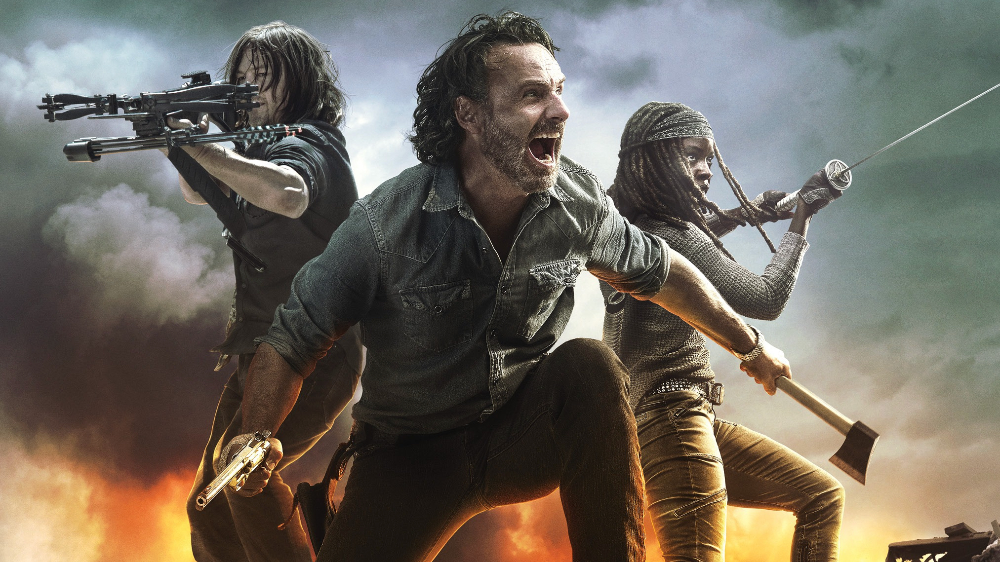

QUIZ TWD
Pergunta 1: Quem foi o primeiro personagem principal a aparecer em The Walking Dead?
- Rick Grimes
- Daryl Dixon
- Lori Grimes
Pergunta 2: Qual era a profissão de Rick Grimes antes do apocalipse?
- Policial
- Médico
- Professor
Pergunta 3: Qual era o nome da fazenda onde Hershel Greene vivia?
- Fazenda Greene
- Fazenda Wilson
Pergunta 4: Quem era a irmã de Maggie?
- Beth Greene
- Carol Peletier
- Sasha Williams
Pergunta 5: Qual personagem era médico antes do apocalipse?
- Hershel Greene
- Eugene Porter
Pergunta 6: Qual foi o nome do episódio em que Negan mata alguns dos personagens principais?
- The Day Will Come When You Won't Be
- Last Day on Earth
- The Walking Dead
Pergunta 7: Rick Grimes foi morto por:
- Negan
- Sussuradores
- Nenhuma das alternativas